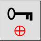
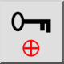
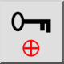
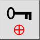

Relatief nulpunt blokkeren
Werkbalk / icoon:
 

Menu: Vang > Relatief nulpunt blokkeren
Sneltoets: R, L
Opdrachten: lockrelativezero | rl
Dit is een automatische vertaling.
Werkbalk / icoon:
 

Menu: Vang > Relatief nulpunt blokkeren
Sneltoets: R, L
Opdrachten: lockrelativezero | rl
Wanneer deze schakelaar is ingeschakeld, wordt de positie van het relatieve nulpunt vergrendeld. Dit betekent dat het niet automatisch beweegt, maar u kunt het nog steeds handmatig verplaatsen met behulp van het functie om de positie van het relatieve nulpunt in te stellen